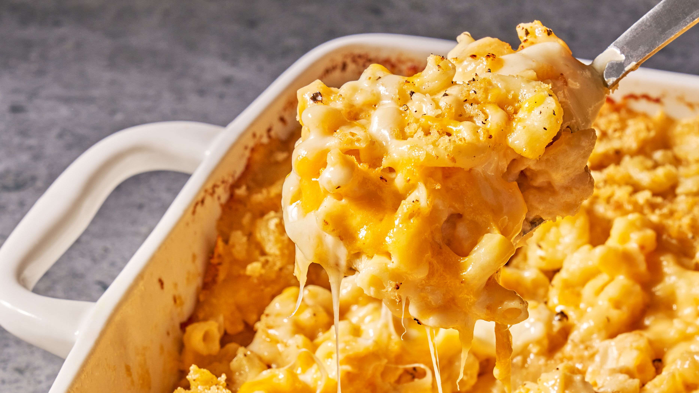

Mac and Cheese

Macaroni and cheese—also called mac 'n' cheese in the US, macaroni cheese in the United Kingdom—is a dish of
English origin, consisting of cooked macaroni pasta and a cheese sauce, most commonly cheddar. It can also
incorporate other ingredients, such as breadcrumbs, meat and vegetables.
Ingredients
- 8 ounces (1/2 pound or about 1 3/4 cups) macaroni or other medium tubular pasta, like fusilli, campanelle, or
penne
- 3 tablespoons butter
- 1/4 cup all-purpose flour
- 1/2 teaspoon salt
- 1/2 teaspoon dry mustard
- 1/4 teaspoon black pepper
- 1/8 teaspoon smoked paprika, optional
- 2 1/2 cups 1% milk
- 3 cups grated sharp cheddar cheese, about 12 ounces
Directions
- Boil the pasta: Bring a large pot of salted water to a boil, add the pasta and cook, stirring occasionally,
until the pasta is al dente—firm to the bite. Drain in a colander and set aside.
- Melt the butter in a large saucepan over medium heat. Whisk in the flour, salt, pepper, dry mustard, and paprika
(if using) and keep it moving for about 2 minutes, making sure it's free of lumps.
- Stir in the milk: Slowly add the milk, whisking constantly, and continue to cook and stir until the sauce is
bubbling and thickened, about 3-4 minutes.
- Add the cheese: Turn the heat off and gently stir in the cheese until it is melted and the sauce is smooth. If
the sauce is too thick, add a little more milk. Taste and add more seasonings if you like.
- Combine the pasta and cheese sauce: In a large serving bowl, combine the sauce and the pasta, stirring to coat
the
pasta well. Serve immediately.